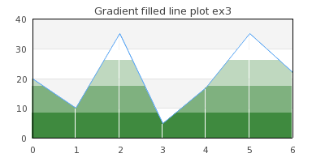

Table of Contents
- 15.1. Basic Line and area graphs
- 15.1.1. Creating a line graph
- 15.1.2. Automatic interpolation of unknown data
- 15.1.3. Adding marks to the plot (a.k.a. plot marks)
- 15.1.4. Displaying the values at the data points
- 15.1.5. Adding several data series to the same graph
- 15.1.6. Adding a second Y-axis
- 15.1.7. Adding a legend box to the graph
- 15.1.8. Changing the style of the line plot - using the step-style
- 15.1.9. Optimizing line plot using "fast drawing"
- 15.1.10. Creating a filled line graphs (a.k.a. area plots)
- 15.1.11. Partially filled area graphs
- 15.1.12. Filled lines with NULL values
- 15.1.13. Accumulated line graphs
- 15.1.14. Accumulated line graphs with given X-labels
- 15.1.15. Constructing smooth line plots with Cubic Splines
- 15.2. Bar graphs
- 15.3. Error plot graphs
- 15.4. Stock graphs
- 15.5. Scatter graphs
- 15.6. Contour graphs
- 15.7. Combining several different plot types in the same graph
- 15.8. Creating several graphs in the same image
Figure 15.1. Supported linear graph types in the library
|
a) Line plot (See Creating a line graph) |
b) Area plot |
c) Bar plot (See Bar graphs) |
|
a) Field plot (See Field plots) |
b) Error plot (See Error plot graphs) |
c) Stock plot (See Stock graphs) |
|
a) Geo-map plot (See Creating Geo-maps) |
b) Impuls (stem) plot (See Scatter graphs) |
c) Spline plot |
|
a) Balloon plot (See Balloon plots) |
b) Scatter plot (See Scatter graphs) |
c) Contour plot (See Contour graphs ) |


Line graphs (we will use the term line graph to refer to an entire graph and the term line plot to refer to a single data series in a line graph) is together with bar graphs the simplest and perhaps the most commonly used graph type. In Graphing the number of sun spots during the 19th Century we have already shown an example of a line graph without explaining to much of the details. The remainder of the section will go into some more details on the options available when creating a line graph.
A line graph always make use of one or several instances of the class
LinePlot which represent one plotted data series in the graph. In all
our example we follow the naming convention to always name the instance of the
LinePlot class as "$lineplot"
The absolutely simplest line graph that is possible to create is shown in
Figure 15.2. The most simple line graph ( example0-0.php)
Example 15.1. The most simple line graph (example0-0.php)
1 2 3 4 5 6 7 8 9 10 11 12 13 14 15 16 17 18 19 20 21 22 23 24 25 | // content="text/plain; charset=utf-8" require_once ('jpgraph/jpgraph.php'); require_once ('jpgraph/jpgraph_line.php'); // Some (random) data $ydata = array(11,3,8,12,5,1,9,13,5,7); // Size of the overall graph $width=350; $height=250; // Create the graph and set a scale. // These two calls are always required $graph = new Graph($width,$height); $graph->SetScale('intlin'); // Create the linear plot $lineplot=new LinePlot($ydata); // Add the plot to the graph $graph->Add($lineplot); // Display the graph $graph->Stroke(); |
There are a number of things to point out here
-
Both the X and Y axis have been automatically scaled and since we didn't provide any x-scale the data point have been numbered automatically starting at 0
-
By default the Y-grid is enabled and displayed in a "soft" color
-
By default the overall graph has a black bordered and a light gray margin
-
By default the size of the margin around the plot area is automatically calculated
While the above example is a perfectly fine graph it looks a bit poor and we
could probably make use of a graph title as well as titles on the axis to
explain the units we are working with. So lets change the simple graph in Figure 15.2. The most simple line graph ( by adding a few lines to set some titles and
get the modified graph shown in Figure 15.3. Adding some titles example0-0.php)( example2.php)
Example 15.2. Adding some titles (example2.php)
1 2 3 4 5 6 7 8 9 10 11 12 13 14 15 16 17 18 19 20 21 22 23 24 25 26 27 28 29 30 31 32 33 | // content="text/plain; charset=utf-8" require_once ('jpgraph/jpgraph.php'); require_once ('jpgraph/jpgraph_line.php'); // Some (random) data $ydata = array(11,3,8,12,5,1,9,13,5,7); // Size of the overall graph $width=350; $height=250; // Create the graph and set a scale. // These two calls are always required $graph = new Graph($width,$height); $graph->SetScale('intlin'); // Setup margin and titles $graph->SetMargin(40,20,20,40); $graph->title->Set('Calls per operator'); $graph->subtitle->Set('(March 12, 2008)'); $graph->xaxis->title->Set('Operator'); $graph->yaxis->title->Set('# of calls'); // Create the linear plot $lineplot=new LinePlot($ydata); // Add the plot to the graph $graph->Add($lineplot); // Display the graph $graph->Stroke(); |
Worth noting in this example are
-
The main graph class instance ($graph) is used as the base to access most properties of the overall graph
-
The margins have been slightly increased to account for the titles of the axis
-
The default position for the title of the x-axis is on the far right and for the y-axis it is placed centered in the middle and rotated in a 90 angle (vertical).
A nice change would now be to have the titles of the axis in a bold font and the line plot a little bit thicker and in blue color. Let's do that by adding the lines
1 2 3 4 5 6 7 | $graph -> title -> SetFont ( FF_FONT1 , FS_BOLD ); $graph -> yaxis -> title -> SetFont ( FF_FONT1 , FS_BOLD ); $graph -> xaxis -> title -> SetFont ( FF_FONT1 , FS_BOLD ); $lineplot -> SetColor ( 'blue' ); $lineplot -> SetWeight ( 2 ); // Two pixel wide |
As was explained in Chapter 8. Text and font handling this will adjust the fonts of the titles to make use of a bold variant of the built-in bitmap fonts. Please note the consistent naming conventions used in the library. Most objects support a common set of basic methods to adjust font, size and colors wherever such concepts make sense.
The result of adding these lines are shown in Figure 15.4. Changing fonts of the axis titles and adjusting plot weight ( (click on the link in the title to see the full source).example3.php)
As a final touch lets make the y-axis have the same color as the data series to stronger show the connection between the data and the scale. At the same time we take the opportunity to add a drop shadow to the overall graph. We do both of these things by adding the following two lines at appropriate places in the script
1 2 3 4 | $graph->SetShadow(); $graph->yaxis->SetColor('blue'); |
The results is shown in Figure 15.5. Adding drop shadow and changing axis color ( belowexample3.0.1.php)
Tip
Remember that the library has multiple ways to handle null data values as described in Different types of NULL data handling
Line graphs supports automatic linear interpolation of missing data point if the missing data point is replaced by a '-' (hyphen character) for more on handling of NULLs in the input data see Different types of NULL data handling.
|
|
|

There is one option to control the behavior of the interpolation together with accumulated line plots and that is how to handle the case where the initial or ending data are unknown.
For accumulated line plots (see below) this is especially critical since each value is plotted with an offset of the "previous" plot and hence all values must be known. By default if the first data value is unknown it will be set to the same value as the first found non-null value. It is also possible, for accumulated line plots, to force the first and last unknown value to be equal to 0 (zero). This is controlled by the method
-
AccLinePlot::SetInterpolateMode($aForceZero)A value of true for the for the argument will force any first or last unknown values to be interpreted as 0 for an accumulated line plot.
Another common embellishment of plots is to add markers for each data point.
The library supports a large number of built-in plot marks as well as the
ability to use arbitrary images as plot marks. Plot marks are instantiated as an
instance of class PlotMark defined in the module
"jpgraph:plotmark.inc.php"
There are three types of built-in plot marks
-
Line based.
These marks are drawn directly by the library at the appropriate places in the graph. These marks are simple rectangles, squares, stars etc The size and colors (both edge and fill) are user adjustable.
-
Image based symbols.
These marks look much more "refined" and are actually small built-in images that are scaled and placed (copied) to the appropriate position in the graph. Since these are predefined images they are only available in a certain number of colors and shapes.
-
Country flags
As was previously discussed the library supports (as of Dec 2008) all known countries and it is possible to use the country flags both as background in the graphs as well as plot marks.
A full list of all available built-in plot marks and there symbolic names are given in Appendix E. Available plot marks.
For now lets keep things simple and just add a small triangle at each of the specified data points by adding the lines
1 2 3 4 5 | $lineplot->mark->SetType(MARK_UTRIANGLE); $lineplot->mark->SetColor('blue'); $lineplot->mark->SetFillColor('red'); |
Caution
The colors of the marks will, if you don't specify them explicitly,
follow the line color. Please note that if you want different colors for
the marks and the line the call to SetColor() for the marks
must be done after the call to the SetColor() for the line
since the marks color will always be reset to the lines color when you
set the line color.
The result after making these modifications are shown in Figure 15.8. Adding basic plot marks to the plot ( example3.1.php)

Tip
In addition to the built in plot marks it is also possible to use a
user specified image as a plot mark. See Figure 14.11. Adding a left,right and center footer ( for an example of how to use this
feature. To use this feature the plot mark type is specified as
footerex1.php)MARK_IMG and the file name of the image is given. For
example the following line will us the image file "myimage.jpg" as plot
marks and scale the image to 50% of its original size
1 | $lineplot->mark->SetType(MARK_IMG,'myimage.jpg','0.5'); |
As a final example we show an example of using one of the built-in image marks by adding the line
1 | $lineplot->mark->SetType(MARK_IMG_DIAMOND,'red',0.5); |
This will add a red diamond mark scaled to 50% of its original size to better
fit the overall size of the graph. The result of adding this is shown in Figure 15.9. Using one of the built-in images as plot mark, MARK_IMG_DIAMOND ( example3.1.1.php)

Tip
Note that some of the built in images are available in different sizes. The reason is that even though it is possible to n scale them by the third argument there is a visual degradation to scale an image larger than it's original size since some pixels needs to be interpolated. Reducing the size with a scale < 1.0 gives much better visual appearance.
In order to use one of the available country flags the type is specified as
MARK_FLAG1, MARK_FLAG2, MARK_FLAG3 or
MARK_FLAG4 which represent the native size of the flag (in
increasing order). The second argument to SetType() is either the
ordinal index number of the country flag or its short name (as listed Appendix F. List of all country flags). The following example illustrates both
these methods of specifying the country flags. The two critical lines are
1 2 3 4 | $p1->mark->SetType(MARK_FLAG1,197); $p2->mark->SetType(MARK_FLAG1,'united states'); |
and the result of creating a graph with some data using country flags as data
markers are shown in Figure 15.10. Using country flags as plot marks ( markflagex1.php)
In addition the plot mark formatting shown above plot marks also supports formating through the use of a callback function. The callback function will be passed the y-value as its only argument and the callback function must return an array consisting of three value, weight, color and fill-color. This could be used to for example alter the colors of the plot marks depending on the actual value. A common use of this feature is to create "balloon" scatter plot where a variable sized filled circle is positioned at specific data points. This is a way t create a 2D plot which conveys three values at each data point, x,y and size. In the section on Scatter plot (see Scatter graphs) we show an example of this.
Lets continue the previous example by making some minor adjustments to also
show the values at each data point. The data label at each data point is
represented by the instance variable "$value". This is an instance of the
class DisplayValue and all normal text attributes can be
adjusted (e.g. color, size, fonts etc). The value is applied to all
labels.
In addition to the usual text formatting it is also possible to adjust how the numeric data labels is formatted. This is done by one of two ways.
-
by submitting a suitable format string. This format string follows the same syntax as the
printf()format string. -
by specifying a format callback function. This callback function must take exactly one argument (which is the data value) and return the wanted string that should be displayed.
In order to display the values the first thing that must happen is to enable the values. This is done by a call to
1 | $lineplot->value->Show(); |
The result of adding this line is shown in Figure 15.11. ( example3.3.php)
We can now modify the appearance of the labels by changing the font and changing the way the labels are formatted. We do this by adding the following lines to the previous example
1 2 3 4 5 | $lineplot->value->SetFont(FF_ARIAL,FS_BOLD,10); $lineplot->value->SetColor('darkred'); $lineplot->value->SetFormat('(%d)'); |
The resulting graph can be seen in Figure 15.12. Changing the appearance of data labels ( example3.4.php)

Tip
To get 1000' separators use the PHP function number_format() as a callback function
Tip
To use method in classes as callback the callback method has to be specified as an array with two string entries. The first entry must be the class and the second entry must be the method name. Note that callback method should be static as no instance context can be created.
As a final example we make use of a callback function to format the values as
Roman Numerals . The result of this can
be seen in Figure 15.13. Formatting display values as roman numerals ( example3.4.1.php)

Up to now all examples we have shown have only had one data series. As was mentioned in the introduction a graph can have an unlimited number of data series (plots) although from a practical consideration (and "viewability") it is probably best to restrict the number of data series in one graph to less than 5-6.
The steps to do this is exactly a repetition of what the examples have shown up to now. The only thing that is needed is to create the second data series, by creating a new instance of a the LinePlot class, set the attributes, and finally add it to the graph.
The following lines show how to create the new data series/plot and add it to the graph (we only show the new lines - not the full script)
1 2 3 4 5 6 7 8 9 | $ydata2 = array( 1 , 19 , 15 , 7 , 22 , 14 , 5 , 9 , 21 , 13 ); // Create a new data series with a different color $lineplot2 = new LinePlot ( $ydata2 ); $lineplot2->SetWeight ( 2 ); // Also add the new data series to the graph $graph->Add( $lineplot2 ); |
Making these additions will create the graph in Figure 15.14. Adding a second data series ( example4.php)
There are two things to note here
-
The Y-scale has changed to accommodate the larger range of Y-values for the second graph.
-
The colors for each successive data series is allocated automatically but of course it is also possible to set the color manually.
-
If you add several plots to the same graph they should contain the same number of data points. This is not a requirement (the graph will be automatically scaled to accommodate the plot with the largest number of points) but it will not look very good since one of the plot end in the middle of the graph.
Caution
Do not mix both manually and automatically assigned colors. When the library assigns colors to a new line plot it will not check if a certain color has been previously manually set and used.
As was discussed in Using multiple y-axis it is possible to add multiple y-axis to a graph. The most common use of this feature is to just use one extra y-axis with a different scale on the right side of the graph. To make this common case as easy as possible to manage the library provides some convenience method to work with one second y-axis (and scale).
The second y-axis is accessed through the "$y2axis" property of
the Graph class and its use is completely analogue to the primary y-axis
("$yaxis").
As you saw in the preceding example you could add multiple plots to the same graph and Y-axis. However what if the two plots you want to display in the graph has very different ranges? One might for example have Y-values like above but the other might have Y-values in the 100:s. Even though it is perfectly possible to add them as above the graph with the smallest values will have a very low dynamic range since the scale must accommodate for the bigger dynamic range of the second plot. (One other way of solving this particular problem could be to use a logarithmic y-scale).
The solution to this is to use a second Y-axis with a different scale and add the second plot to this Y-axis instead. Let's take a look at how that is accomplished.
First we need to create a new data array with large values and secondly we need to specify a scale for the Y2 axis. This is done by adding the lines
1 2 3 4 | $y2data = array(354 , 200 , 265 , 99 , 111 , 91 , 198 , 225 , 293 , 251); $graph->SetY2Scale('lin'); |
To instruct the library to add this data series to the second y-axis we have to make use of the method
-
Graph::AddY2()
which is used in analogy with the usual Graph::Add()
To make the graph easier to read we set the color of the second y-axis to be
the same as the second data series. The result of this is shown in Figure 15.15. Adding a second y-axis to the graph ( below.example5.php)
Once we have multiple data series there is a need to separate them and that is usually done by adding a legend box with suitable titles. As was shown in Adjusting the position and layout of the legend it is possible to both add a legend box and adjusts its position. Lets now continue the previous example by adding a suitable legend box to separate the two data series.
Each plot type has a 'SetLegend()' method which is used to name
that plot in the legend. So to name the two plots in the previous example we
have been working with so far we need to add the two lines
1 2 3 4 | $lineplot->SetLegend('Plot 1'); $lineplot2->SetLegend('Plot 2'); |
As you can see the legend gets automatically sized depending on how many plots there are that have legend texts to display. By default it is placed with it's top right corner close to the upper right edge of the graph. Depending on the image you might want to adjust this or you might want to add a larger margin which is big enough to accompany the legend. Let's do both.
First we increase the right margin and then we place the legend so that it is roughly centered in the right margin area. We will also enlarge the overall image so the plot area doesn't get too squeezed.
The legend properties is accessed through the '$legend' property
of the graph. So in order to adjust the position (as was described in Adjusting the position and layout of the legend ) we add the line
1 | $graph->legend->SetPos(0.05, 0.5, 'right', 'center'); |
This will then give the graph shown in Figure 15.16. Adding and adjusting the position of the legend box ( example6.php)
As a reminder we briefly discuss the working of the SetPos()
method.
The position is specified as a fraction of the overall width and height of the entire graph. This makes it possible for to resize the graph without disturbing the relative position of the legend. The second two arguments specifies the anchor point in the legend box that should be aligned with the specified position.
As can be seen in Figure 15.16. Adding and adjusting the position of the legend box ( the legends are by
default placed in a column. It is also possible to adjust this by calling either
the example6.php)Legend::SetLayout() method or specifically set the number of
columns to use by calling Legend::SetColumns() . Lets change the
layout so the legend texts are set in one row and place the legend box at the
bottom of the graph. If we do this we get the result shown in Figure 15.17. Adjusting the layout of the texts in the legend box ( example6.1.php)
As a final example lets combine what we have learnt up to now, i.e. adding
plot marks, adding multiple data series to the same graph and adding a legend
box into one example. In Figure 15.18. Using plot marks with several data series and a legend ( we have
in addition used the feature with "tabbed" titles which is an alternative way to
put titles on graph (as discussed in Formatting and specifying the titles of the graph).builtinplotmarksex1.php)
Step style refers to an alternate way of rendering line plots by not drawing a direct line between two adjacent points but rather draw two segments. The first segment being a horizontal line to the next X-value and then a vertical line from that point to the correct Y-value at that instance. This is also known as "zero-order hold" (as compared with the first-order hold which is an alternative name for combining each data point with a straight line). Enabling step stylöe is done by calling the method
In Figure 15.19. Using the "Step style" for line plots ( we have enabled the step style for a
basic line graphs to illustrate this concept.example6.2.php)
For line plots with a large amount of data point that is drawn with a solid line it is possible to speed up the construction of the graph by calling the method:
-
LinePlot::SetFastStroke($aFlg=true)
This will avoid some of the overhead associated with drawing lines of arbitrary style. The limitations with this optimization is
-
Only solid lines, no styles on the lines are allowed (including no step-style)
-
No plot marks
-
No value labels
-
No area plot , i.e. no filled line graphs and no filled partial areas
For line plots with a large amount of data point the savings can be quite substantially and in the order of 40-50% speedup.
A filled line plot (also known as an area plot) can be created in two ways depending on whether automatic color handling is sufficient or there is a need to manually specify the color.
-
Case 1: Using automatic fill color
In this case there is only need to tell that we want t filled line graph by calling the method
-
LinePlot::SetFilled($aFlg=true)
The color assigned to the filled area will be set automatically
-
-
Case 2: Setting a manual fill color
In this case the method called to set the fill color will make an implicit call to
SetFilled(). Setting the fill color is done by the method-
LinePlot::SetFillColor($aColor)
-
In Figure 15.20. A basic filled line graph ( a basic filled line
graph is shown which also have plot marks and an adjusted color so that the line
and the fill have different colors.filledlineex01.php)
There are a couple of thing worth noting
-
If you add multiple filled line plots to one graph make sure you add the one with the highest Y-values first since it will otherwise overwrite the other plots and they will not be visible. Plots are stroked in the order they are added to the graph, so the graph you want front-most must be added last.
-
When using legends with filled line plot the legend will show the fill color and not the bounding line color.
-
The area filled is the area between the x-axis at y=0 and the data value
-
By default the line color will be the same as the fill color. This means that if a different line color is needed then the call to
LinePlot::SetColor()must be after the call toLinePlot::SetFillColor() -
Grid lines are by default drawn behind the plot (or rather the plot is drawn on top of the plot area). However, this can be adjusted so that the grid lines will always be on top of the line plots. This is done by calling the method
-
Graph::SetGridDepth($aDepth)where$aDepthis eitherDEPTH_BACKorDEPTH_FRONTsymbolic defines
An alternative way of handling this is to make the fill color semi-transparent by setting the alpha-blending for the fill color. See Specifying the alpha channel (color transparency) and Figure 15.18. Using plot marks with several data series and a legend
(above for a real example. Just making this grid depth adjustments will give the result shown in Figure 15.21. Having the grid line on top of a filled line plotbuiltinplotmarksex1.php)(filledlineex01.1.php)
-
Tip
By default the fill is only done between y=0 and the line plot. In some cases it might be useful to have the fill go all the way down to whatever the minimum y-value is (for example if the x-axis is always positioned at the minimum y-value). This can be accomplished by calling the method
-
LinePlot::SetFillFromYMin($aFlg=true)
As was mentioned in the previous paragraph the fill normally goes from the bottom and up to the line specified by the data series. Another variant is to have the fill go from the top of the plot area down to the line.
There is primary one use for this type of fill and that is to create a "mask" for a background image to make the illusion that the area below the line is filled with the image while the area above the line is the normal plot background.
This is done by first telling the library the fill shall be from the top with a call to the method
-
LinePlot::SetFillFromYMax($aFlg=true)
then we create the data series as usual but specify the fill color as the wanted background color and also add the image we want as a background image.
Since we only want to use the first plot as a mask we can also specify the line weight to 0 (to avoid the edge lines of the plot going from the first and last point to the top. To have a nice line we can just add a second line plot which is not filled and is just used to draw the line in our specified color and weight.
An example of how this can look is shown in Figure 15.22. Creating the effect of an area fill with an image ( below which shows a fictive growth
in education which is illustrated with an old class room photography.lineimagefillex1.php)
Tip
To have the grid lines on top of the area plot (so they are visible since they are vy default drawn at the bottom) the depth of the grid lines can be set with a call to the method
-
Graph::SetGridDepth($aDepth)
For example as in
1 | $graph->SetGridDepth(DEPTH_FRONT); |
As a complement to what was described in the previous section it is also
possible to fill from the bottom. By default an area is filled from the
0-line to the boundary of the data series as is shown in Figure 15.23. Filling from the 0-line (The default) ( belowmanualtickex3.php)
By making a call to
-
LinePlot::SetFillFromYMin($aFlg=true)
The area will instead be filled from the bottom as is shown in Figure 15.24. Filling from the bottom ( manualtickex4.php)
Note
In Figure 15.23. Filling from the 0-line (The default) ( and Figure 15.24. Filling from the bottom manualtickex3.php)( we have used gradient fill in
both the plot area and the amrgin area. This is a feature that was
introduced in free-version3.0.5 and in pro-version 3.1.3pmanualtickex4.php)
In addition to the solid color fill it is also possible to use gradient fills for are graphs. To specify a gradient fill for a line graph the following method in LinePlot class is used
-
LinePlot::SetFillGradient($aFromColor,$aToColor,$aNumColors=100,$aFilled=true)$aFromColor,$aToColor, The starting and ending color$aNumColors=100, The number of colors to use in the transition between from and to color$aFilled=true, Enable/disable gradient filling
Some examples of typical use of this is shown below
The following two examples shows the effect of changing the number of intermediate colors that are used to get from the "from color" and to the "to color".
|
|
Figure 15.27. Only using 4 colors in total between start and finish color  |
In addition to filling the entire area between the line plot and the x-axis (at y=0) the library also offers the possibility to add areas limited by the line and a specified interval on the x-axis. Several such areas can be added and each area having a different color. In ?? a basic example of how this can look is shown.
The areas (one or more) are created by calling the method
-
LinePlot::AddArea($aMin=0,$aMax=0,$aFilled=LP_AREA_NOT_FILLED,$aColor="gray9",$aBorder=LP_AREA_BORDER)The extension of the area along the x-axis is given by the
$aMinand$aMaxvalues.The third argument specifies whether the area should be filled or not. This argument can have the values
-
LP_AREA_FILLED -
LP_AREA_NOT_FILLED
The fourth argument specifies the fill color and the fifth argument specifies if the area should have a border (edge) or not. If the area has a border it will be the same color as the line. The values for the fourth argument can be
-
LP_AREA_BORDER -
LP_AREA_NO_BORDER
-
The NULL value handling follows the same principle as was described for line
plots. If the NULL value is specified as '-' the line will be interpretated but
if it is specified as 'x' it will be broken up as is shown in Figure 15.29. Area plot with 'x' NULL values ( filledlineex03.php)
Accumulated line graphs are line graphs that are "stacked" on top of each other. That is, the values in the supplied data for the Y-axis is not the absolute value but rather the relative value from graph below. For example if you have two line graphs with three points each, say [3,7,5] and [6,9,7]. The first graph will be plotted on the absolute Y-values [3,7,5] the second plot will be plotted at [3+6, 7+9, 5+7], hence the values of the previous graphs will be used as offsets.
An accumulated graph plot is represented by class AccLinePlot
which is a container class for line plots. This means that the
AccLinePlot needs to be "fed" a number of ordinary instances of
LinePlot.
Any number of ordinary line graphs may be added together (up to the limit of readability of the plot).
For example, to add three line plots in an accumulated line plot graph the following code is needed
1 2 3 4 5 6 7 8 9 10 11 12 | // First create the individual plots $p1 = new LinePlot( $datay_1 ); $p2 = new LinePlot( $datay_2 ); $p3 = new LinePlot( $datay_3 ); // Then add them together to form a accumulated plot $ap = new AccLinePlot(array( $p1 , $p2 , $p3 )); // Add the accumulated line plot to the graph $graph->Add ( $ap ); |
Using some random data for the areas can produce the result shown in Figure 15.30. A basic accumulated area plot ( example17.php)
Creating an accumulated line plot, (or a filled accumulated area plot), with multiple data sets at given x-coordinates poses some specific problems when the coordinates for the different data sets are not given at the same x-coordinates. This is a generic problem and has nothing to do with library in particular. This section wil deal with one possible way of handling this by making sure that missing data points are created if they are "missing".
To understand the problem we will make one simplifications (that is of no real consequence for the end result) that can be stated as
-
the X-coordinates for all data tuples are whole positive number.
-
the X-coordinates are in sorted order (non-descending)
The core issue can be illustrate as follows. Lets assume that we want to make an accumulated graph showing the two data sets
data set 1 == (0,5), (2,10), (3,10), (5,20) data set 2 == (0,7), (1,12), (2,5), (5,10)
In the above notation the tuple (0,5) means a data point with X-coordinate = 0 and Y-coordinate = 5.
What the library now needs to do is to first plot data set 1. No problem. When it then becomes time to plot the second data set we face an issue. The only points where we now the Y-value of data set 1 is at the given discrete points (0,2,3,5).
Plotting the first tuple for data set 2 shown above gives an absolute starting point at
(0,5+7) == (0,12)
The next data point we know for data set 2 is (1,12) so we need to plot this. But now we can see that we do not know the value for data set 1 at X-coordinate = 1. We only know the values at coordinates 0 and 2. This gives us a problem. We need to know at what offset we should plot this data point in data set 2 and we have no direct way of calculating this.
Now, one might argue that we could just interpolate between the data points (0,5) and (2,10) the Y-value at X=1 (doing a linear interpolation this would give the data point (1,7.5)) so why doesn't the library simply do this? It surely could be done.
Note
In real life using this approach would be much more complex. First of all we need to create a linear succession of all X-values used in all data sets to create an ordered set and then fill in the blanks so that all data sets have values at all given X-coordinates. Those of you familiar with signal processing will recognize this as an (almost) up-sampling of the original data sets followed by a low pass filter.
However, by design the library doesn't do this. The crucial observation here is that it can not be a graphic libraries responsibility to "create" missing data points by making assumption that a particular polynomial interpolation is valid (in this case a first degree approximation). What if a linear interpolation is not representative for the data set given? Perhaps a second degree approximation would be more accurate.
So, this kind of data preparation must be done in the domain of the given data set where knowledge of the underlying data will allow an accurate preparation of the input to a graphing script if we insist of plotting an accumulated graph. One could argue that accumulated data plots can only be done for data series with the same X-coordinates.
So what if we are still required to do an accumulated plot even when we don't have all the data sets at the same X-coordinates? Going back to our original two data sets, hereafter referrered to as DS1 and DS2 there are 2 manual steps (as described above) that needs to happen.
-
Identify all X-data points that needs to exist
-
Create values for all data sets at those points
So, in DS1 and DS2 the union of the two data sets X-coordinates are
X_coordinates == union(DS1_x, DS2_x) == 0,1,2,3,5
This will force us to augment the two data sets as
data set 1 == (0,5), (1,??), (2,10), (3,10), (5,20) data set 2 == (0,7), (1,12), (2, 5), (3,??), (5,10)
Where I have added '??' to indicate values that needs to be computed in order to draw an accumulated line/area plot at specific values. Now assume that we are able to find the missing data for these points by some method to be
data set 1 == (0,5), (1, 8), (2,10), (3,10), (5,20) data set 2 == (0,7), (1,12), (2, 5), (3, 2), (5,10)
Are we now ready to plot these data sets? Unfortunately not quite. The remaining problem is that since the library only handles accumulated plots without a given X-coordinate (using an X-coordinate for the individual line plots will have no affect - and it's behaviour is undefined). This means that the data points are assumed to be equ-distance apart - and this is almost true for the data sets above. There is 1 unit between theme apart from the two last tuples which in fact have a distance of 2 units. In fact the library only plots data sets with a given Y-coordinate and then assumes that the x-coordinate is a linear ordering of (0,1,2, ..)
So in order to create a linear equ-distance ordered set we need to further augment the two data sets as
data set 1 == (0,5), (1, 8), (2,10), (3,10), (4,??), (5,20) data set 2 == (0,7), (1,12), (2, 5), (3, 2), (4,??), (5,10)
So this means that we need to manually calculate another interpolated value. If we know we can make a linear interpolation (or perhaps find the data at this point) it will give us
data set 1 == (0,5), (1, 8), (2,10), (3,10), (4,15), (5,20) data set 2 == (0,7), (1,12), (2, 5), (3, 2), (4, 6), (5,10)
This final data set is now ready to be sent to the
AccLinePlot class. It is left as a (non-trivial) exercise
to the reader to define and implement a function that performs the steps
outlined above to create proper data sets before reading on.
With non-trivial X-coordinates we mean for example timestamps or perhaps real numbers. For timestamps it is not so difficult. What we need to do is to identify the proper interval (in the original timestamp domain) and then create a mapping between that domain and the natural numbers (0,1,2,3,...).
The reason for this is that the library only accepts Y-coordinates as argument to the accumulated data series and will make the implicit assumption that when it plots the data it will plot the data points at consecutive values as if the X-coordinates had been given as (0,1,2,3,..). Hence we need to manually prepare the data to match this format.
As the final step we manually set the labels for the X-axis according to our interpretation. An example (with some code snippets) will make this approach clear.
Example - using timestamps
Assume we have the two data sets with timestamps
DS1 == (1212199200,12), (1212210000,20), (1212213600,30) DS1 == (1212199200,12), (1212206400, 8)
and we now that the sampling interval between the data points are 7200s (=2 min). Following the same principle as above we need to find the additional values
DS1 == (1212199200,12), (1212206400,??), (1212210000,20), (1212213600,30) DS1 == (1212199200,12), (1212206400, 8), (1212210000,??), (1212213600,??)
further assuming that we (by some method) can find these value we can then interpret this data as
DS1 == (1212199200,12), (1212206400,16), (1212210000,20), (1212213600,30) DS1 == (1212199200,12), (1212206400, 8), (1212210000, 0), (1212213600, 0)
In the above we have made the explicit assumption that unknown data points at the end can be interpretated as 0 in this particular application.
We now have an ordered sequence of these tuples and we can imagine a mapping that will allow us to write these sequences as
DS1 == (0,12), (1,16), (2,20), (3,30) DS1 == (0,12), (1, 8), (2, 0), (3, 0)
The mapping for this is xi=1212199200 + 7200*i, i=0..3 which
we use when we put the final labels in the graph.
The only steps that remain to handle timestamps is to manually replace the X-scale (which in this case would be 0,1,2,3) with the calculated values according to the mapping given above.
We do this by creating an array of the timestamps we need to plot and then
replace them - in situ - with an application of the standard PHP function
array_walk() which applies a user defined function to each
value in an array and replaces that value with the return value of the user
function. In this case we create a user function that implements the mapping
stated above with the additional twist that given an argument as a time
stamp it returns a suitable human format for that time stamp.
The following code fragments shows how this could be done
1 2 3 4 5 6 7 8 | // Some userdefined human readable version of the timestamp
function formatDate(&$aVal) {
$aVal = date('Y-m-d H:i',$aVal);
}
$timeStamps = array(212199200,1212206400,1212210000,1212213600);
array_walk($time,'formatDate'); |
when we now have the labels in a nice human readable format we can put them on the scale labels with
1 2 | $graph->xaxis->SetTickLabels($timeStamps);
$graph->xaxis->SetLabelAngle(90); |
though strictly not necessary we have also tilted the labels 90 degrees in order to minimize the risk the labels overwrite each other.
If we still think that the labels are too close together ea we can chose to only label every second tick mark. We do this with a call to
1 | $graph->xaxis->SetTextLabelInterval(2); |
Example using real (i.e. floating point) x-coordinates
In principle this is handled in the same way as what we shown above for timestamps. The additional complexity here spells rounding errors. When we establish the equidistant interval between each data point it will be a real number, potentially an irrational number, which means that we cannot represent it exactly and adding the interval repeated times might cause rounding errors if we are not careful.
Secondly we need to find a mapping between the ordered sequence of the real numbers we have as X-coordinates and the natural numbers which are the implicit X-coordinates assumed by the library.
In the example below we artifically create some data sets where all the sets have values at all specified timestamps with the following code
1 2 3 4 5 6 7 8 9 10 11 12 13 14 15 16 17 | //Create some test data $xdata = array(); $ydata = array(); // Timestamps - 2h (=7200s) apart starting $sampling = 7200; $n = 50; // data points // Setup the data arrays with some random data for($i=0; $i < $n; ++$i ) { $xdata[$i] = time() + $i * $sampling; $ydata[0][$i] = rand(12,15); $ydata[1][$i] = rand(100,155); $ydata[2][$i] = rand(20,30); } |
Since the xdata array is given as timestamps we need to make this more
human readable by converting the timestamp using the date()
function. To do this we create an axillary helper function and then use the
array_walk() standard array function to apply this
formatting to all existing values in the timestamp array as follows.
1 2 3 4 5 6 7 | // Formatting function to translate the timestamps into human readable labels
function formatDate(&$aVal) {
$aVal = date('Y-m-d H:i',$aVal);
}
// Apply this format to all time values in the data to prepare it to be display
array_walk($time,'formatDate'); |
The core of the script can now be written. For a change we make some adjustment from the default values of colors and tick mark positioning as a reminder that there is a lot of flexibility in creating the graphs.
1 2 3 4 5 6 7 8 9 10 11 12 13 14 15 16 17 18 19 20 21 22 23 24 25 26 27 28 29 30 31 32 33 34 35 36 | // Create the graph. $graph = new Graph(700, 400); $graph->title->Set('Accumulated values with specified X-axis scale'); $graph->SetScale('datlin'); // Setup margin color $graph->SetMarginColor('green@0.95'); // Adjust the margin to make room for the X-labels $graph->SetMargin(40,30,40,120); // Turn the tick marks out from the plot area $graph->xaxis->SetTickSide(SIDE_BOTTOM); $graph->yaxis->SetTickSide(SIDE_LEFT); $p0 =new LinePlot($a); $p0->SetFillColor('sandybrown'); $p1 =new LinePlot($b); $p1->SetFillColor('lightblue'); $p2 =new LinePlot($c); $p2->SetFillColor('red'); $ap = new AccLinePlot(array($p0,$p1,$p2)); $graph->xaxis->SetTickLabels($time); $graph->xaxis->SetTextLabelInterval(4); // Add the plot to the graph $graph->Add($ap); // Set the angle for the labels to 90 degrees $graph->xaxis->SetLabelAngle(90); // Send the graph back to the browser $graph->Stroke(); |
The resulting image will now look something like what is shown in ??
The function InterpolateData() below takes two array of
arrays and one integer as arguments. The first array of arrays contains the
X-coordinates for each data set and the second array of arrays contains the
Y-coordinates for all the data sets. The final integer argument is the
distance (or sample rate) that should be assumed between each X-coordinate.
The function will return a tuple. The first element in the returned tuple is a single array with all the X-values that should be used and the second element is an array of arrays with all the Y-data sets with all data specified for each X-coordinate. Any missing Y values are interpolated using a linear interpolation schema.
So using our first example above as demonstration this would be handled as
1 2 3 4 5 6 7 8 9 10 11 12 13 14 15 | $datax = array( array(0,2,3,5), array(0,1,2,5)); $datay = array( array(5,10,10,20), array(7,12,5,10)); list($datax, $datay) = InterpolateData($datax, $datay); // $datax = array(0,1,2,3,4,5) // $datay = array( array(5, 8,10,10,15,20), // array(7,12, 5, 2, 6,10)); |
One possible implementation of this function is given below. It has primarily been written for clarity and not necessary high performance. To interpolate the "missing" Y-values a linear approximation is assumed.
1 2 3 4 5 6 7 8 9 10 11 12 13 14 15 16 17 18 19 20 21 22 23 24 25 26 27 28 29 30 31 32 33 34 35 36 37 38 39 40 41 42 43 44 45 46 47 48 49 50 51 52 53 54 55 56 57 58 59 60 61 62 63 64 65 66 67 68 69 70 71 72 73 74 75 76 77 78 79 80 81 82 83 84 85 86 87 88 89 90 91 92 93 94 95 96 97 98 99 100 101 102 103 104 105 106 107 108 109 110 111 112 113 114 115 116 117 118 119 120 121 122 123 124 125 126 127 128 129 130 131 132 133 134 135 136 137 138 139 140 141 142 143 144 145 146 147 148 149 150 151 | function InterpolateData($aXData,$aYData,$aSampleInterval=1) { // First do some sanity checks on the input data $nx = count($aXData); $ny = count($aYData); if( $nx != $ny ) return array(false,-1); for( $i=0; $i < $nx; ++$i ) { if( count($aXData[$i]) != count($aYData[$i]) ) return array(false,-2); } // Create the sorted union of all X-coordinates $unionx = array_union($aXData); $length = count($unionx); // We now have to make sure that the distance between all // X-coordinates is 1 unit of the sample interval. If not // we will have to insert suitable X-value $i=1; while( $i < $length ) { $missing = 0; $diff = $unionx[$i] - $unionx[$i-1]; if( $diff != $aSampleInterval ) { // Sanity check to make sure sample interval is an even multiple // of the distance between the gven X-coordinates if( $diff % $aSampleInterval !== 0 ) { return array(false,-4); } $missing = $diff / $aSampleInterval - 1; $fill = array(); for( $j=0; $j < $missing; ++$j ) { $fill[$j] = $aSampleInterval*($j+1)+$unionx[$i-1]; } $unionx = array_merge( array_slice($unionx,0,$i),$fill,array_slice($unionx,$i)); } $i += $missing+1; $length += $missing; } if( $length != count($unionx) ) { // Internal error check return array(false,-3); } // Now loop through all the individual data sets and find out // which x-data is missing and hence needs to be interpolated $n = count($aXData); for( $i=0; $i < $n; ++$i ) { $missing_values = array_diff($unionx, $aXData[$i]); // Now find the position of each missing X-coordinate // and use that position in the corresponding Y array // to insert an interpolated value $m = count($missing_values); foreach( $missing_values as $key => $val ) { $idx = array_search($val,$unionx); // Now split the Y-array at that position and insert // a new sentinel value if( $idx >= 0 ) { $aYData[$i] = array_merge( array_slice($aYData[$i],0,$idx), array(NULL), array_slice($aYData[$i],$idx)); } } // The next step is to actually calculate an interpolated value // for the Y-coordinates we don't have. As a special case any // beginning or ending non-defined coordinates are set to 0 // Set all beginning NULL to 0 for( $j=0; $j < $length; ++$j ) { if( $aYData[$i][$j] !== NULL ) break; $aYData[$i][$j] = 0; } // Set all ending NULL to 0 for( $j=$length-1; $j >= 0; --$j ) { if( $aYData[$i][$j] !== NULL ) break; $aYData[$i][$j] = 0; } // Calculate the remaingin missing values as a linear // interpolation and keeping in mind that there might be // multiple missing values in a row. $j = 0; while($j < $length ) { if( $aYData[$i][$j] === NULL ) { // How many unknown values in a row? $cnt = 1; while( $j+$cnt < $length && $aYData[$i][$j+$cnt]===NULL ) { ++$cnt; } if( $cnt == 1 ) { $aYData[$i][$j] = ($aYData[$i][$j-1]+$aYData[$i][$j+1])/2; } else { $step = ($aYData[$i][$j+$cnt] - $aYData[$i][$j-1])/($cnt+1); for( $k=1; $k <= $cnt; ++$k ) { $aYData[$i][$j+$k-1] = $step*$k+$aYData[$i][$j-1]; } } } ++$j; } } return array($unionx,$aYData); } //------------------------------------------------------------------------ // Helper function to create the union of two arrays //------------------------------------------------------------------------ // Create the sorted union of all numeric arrays given as argument function array_union($a) { $n = count($a); $res = $a[0]; for( $i=1; $i < $n; ++$i) { $res = _array2_union($res,$a[$i]); } sort($res); return $res; }; // Return the union between two numeric arrays function _array2_union($a,$b) { if( $a == NULL ) return $b; if( $b == NULL ) return $a; // A standard "trick" to calculate the union of two arrays return array_merge( array_intersect($a,$b), array_diff($a, $b), array_diff($b, $a)); } |
The library support interpolation between data point by the use of cubic splines. This will make the implicit assumption that the underlying phenomenon that is plotted can be represented by a 3:rd degree polynomial between the given data points (also known as a control points).
Cubic splines have the property that the constructed line will pass through all control points given.
To construct a spline you both the X and Y coordinates for the known data points are needed since the library can make no assumption on the step size between the data points.
The cubic spline functionality in the library is encapsulated in the
class Spline which is define the module
"jpgraph_regstat.inc.php" which must be added to the
included files in the script.
The first step is to construct new Spline instance. This class is instantiated by calling the constructor with the two known data arrays (X and Y) as follows.
1 | $spline = new Spline( $xdata , $ydata ); |
This call initializes the spline with the data points given. These data points are also known as Control points for the spline. This helper class doesn't draw any line itself. Instead it is merely used to get a new (larger) data array which have all the interpolated values. These new value are then used to make the actual line plot. This way gives great flexibility in how to use the interpolated data points.
To get the y- and x-axis data to be plotted we call the method
Spline::Get() to get an interpolated array containing a
specified number of points. So for example the line
1 | list($sdatax , $sdatay) = $spline->Get( 50 ); |
will construct the two new data arrays '$sdatax' and
'$sdatay' which contains 50 data points. These two arrays are
constructed from the control points we specified when we created the
'$spline' object. These data arrays are then used to make the
actual plot just as for a "standard" plot. In Figure 15.32. Constructing a smooth spline curve from 8 control points ( we have used 8 control points to construct a spline.splineex1.php)

In order to make the example more interesting we actually used two plots. First a line plot to get the smooth curve and then a standard scatter plot (discussed later in this manual) which is used to illustrate where the control points are situated.
Note
The library also support the construction of Bezier curves which is built on a similar concept of constructing a smooth line from a number of control points, The biggest difference between cubic splines and Bezier curves is that while a cubic spline is always guaranteed to pass through all control point a Bezier curve will in general not pass through any control points. Instead the Bezier control point are outside the curve and affects the curvature of the curve. Bezier type curves are not in general used together with data visualization but are instead used to create specific curves, usually for CAD and 3D graphic purposes. In the discussion of Canvas graphs, see Canvas graphs, we discuss this further.